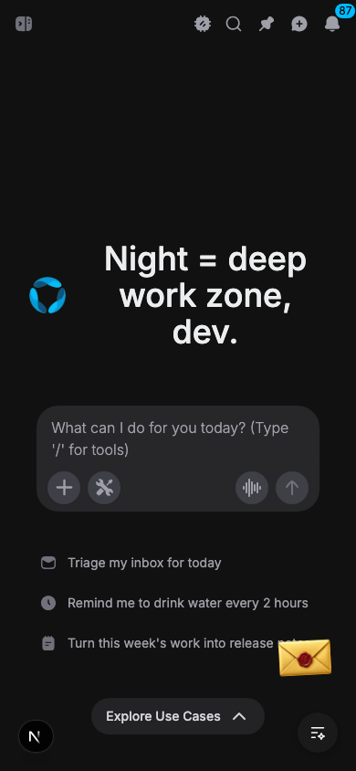
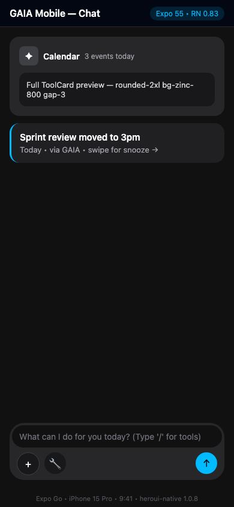
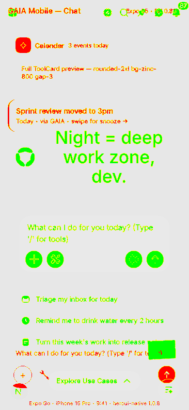
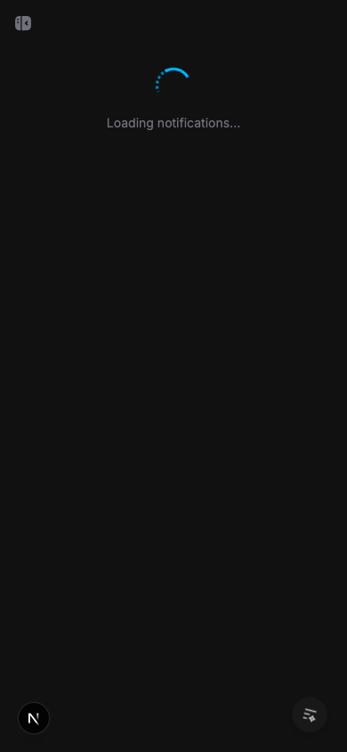
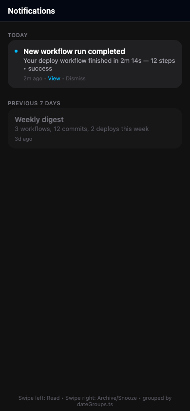
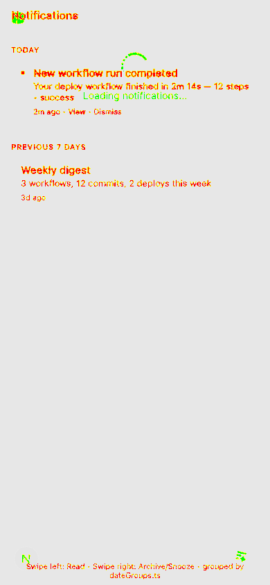

2 PASS · 0 FLAG · 0 BLOCK · 2 total · report.json · Token sync: shared/design/tokens.generated.ts + shared/ui/toolCardTokens + shared/utils/dateGroups
| Route | Diff | Verdict | Notes | Web | Native (Expo) | Diff |
|---|---|---|---|---|---|---|
/cgaia://chat |
5.87% 19346 px |
PASS | web chat (/c) vs native chat — composer parity: radius 24, bg zinc-800, placeholder synced via @gaia/shared/chat/composer COMPOSER_CONSTANTS |  |
 |
 |
/notificationsgaia://notifications |
1.36% 4502 px |
PASS | notifications parity — grouping via shared/dateGroups.ts Today/Previous 7 days, card tokens via shared/ui/toolCardTokens + design tokens |  |
 |
 |
Generated by scripts/vision-compare.mjs · threshold=0.12 · size=390×844 · Gallery: gallery-tool-cards.png (Tool Gallery dev route)